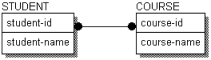
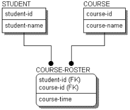
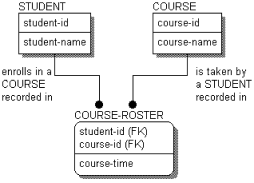

In key-based and fully-attributed models, relationships must relate zero or one instances in a parent entity to a specific set of instances in a child entity. As a result of this rule, many-to-many relationships that were discovered and documented in an ERD or earlier modeling phase must be broken down into a pair of one-to-many relationships.

This figure shows a many-to-many relationship between STUDENTs and COURSEs. If you did not eliminate the many-to-many relationship between COURSE and STUDENT, the key of COURSE would be included in the key of STUDENT, and the key of STUDENT would be included in the key of COURSE. Since COURSEs are identified by their own keys, and likewise for STUDENTs this, creates an endless loop.
You can eliminate a many-to-many relationship by creating an associative entity. In the following figure, the many-to-many relationship between STUDENT and COURSE is resolved by adding the COURSE-ROSTER entity.

COURSE-ROSTER is an associative entity, which means it is used to define the association between two related entities.
Many-to-many relationships often hide meaning. In the diagram with a many-to-many relationship, you know that a STUDENT enrolls in many COURSEs, but no information is included to show how. When you resolve the many-to-many relationship, you see not only how the entities are related, but uncover additional information, such as the �course-time,� which also describes facts about the relationship.
Once the many-to-many relationship is resolved, you are faced with the requirement to include relationship verb phrases that validate the structure. There are two ways to do this: construct new verb phrases or use the verb phrases as they existed for the many-to-many relationship. The most straightforward way is to continue to read the many-to-many relationship, through the associative entity. Therefore, you can read A STUDENT <enrolls in> many COURSEs and A COURSE <is taken by> many STUDENTs. Many modelers adopt this style for constructing and reading a model.
There is another style, which is equally correct, but a bit more cumbersome. The structure of the model is exactly the same, but the verb phrases are different, and the model is read in a slightly different way:

You would read: A STUDENT <enrolls in a COURSE recorded in> one or more COURSE-ROSTERs, and A COURSE <is taken by a STUDENT recorded in> one or more COURSE-ROSTERs.Although the verb phrases are now quite long, the reading follows the standard pattern; reading directly from the parent entity to the child.
Whichever style you choose, be consistent. Deciding how to record verb phrases for many-to-many relationships is not too difficult when the structures are fairly simple, as in these examples. However, this can become more difficult when the structures become more complex, such as when the entities on either side of the associative entities are themselves associative entities, which are there to represent other many-to-many relationships.